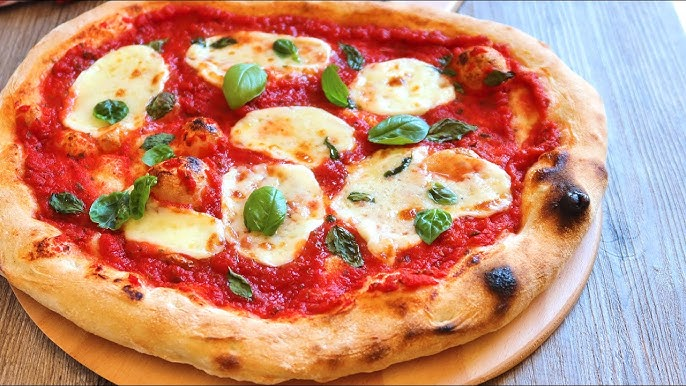
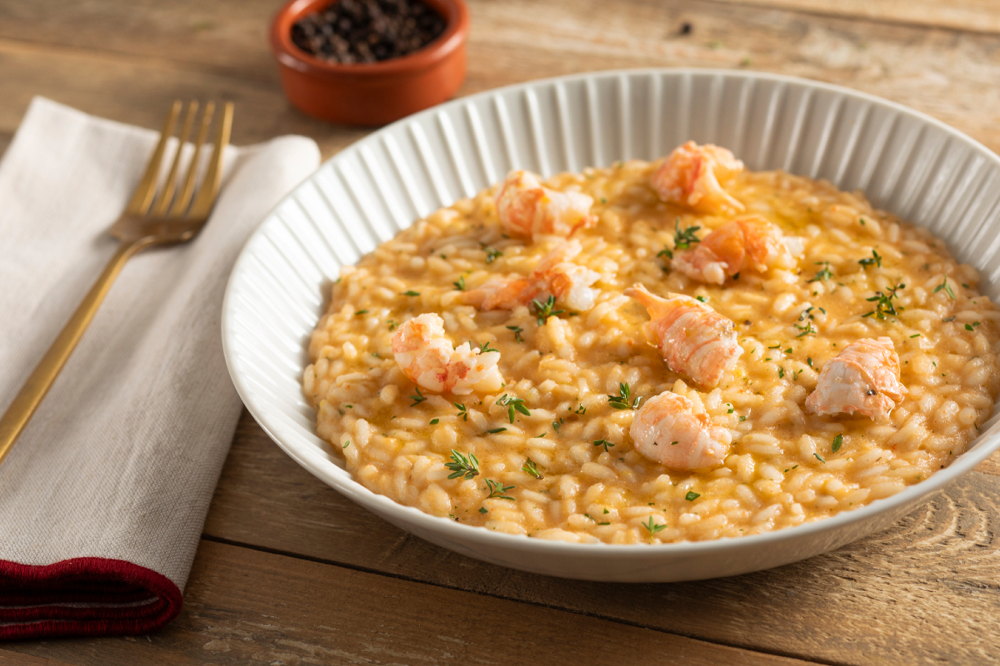
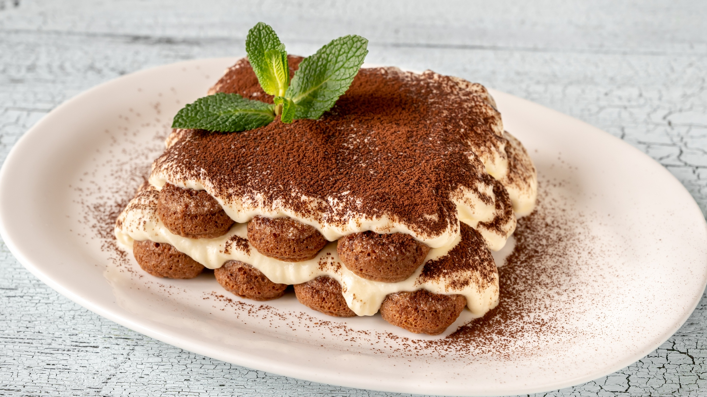

Pizza Margherita

Pizza Margherita, una de las más famosas de la región, con tomate, mozzarella y albahaca.
Planifica tu visita al Lago de Como de forma sencilla y accesible.
Como es un destino ideal para combinar naturaleza, cultura, gastronomía y deporte. La ciudad puede recorrerse a pie, pero también es recomendable utilizar el barco para recorrer los pueblos del lago.

Pizza Margherita, una de las más famosas de la región, con tomate, mozzarella y albahaca.

Risotto, un plato tradicional de la región, con arroz y ingredientes locales.

Tiramisú, un postre tradicional de la región, con bizcocho, crema y café.